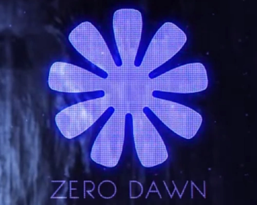
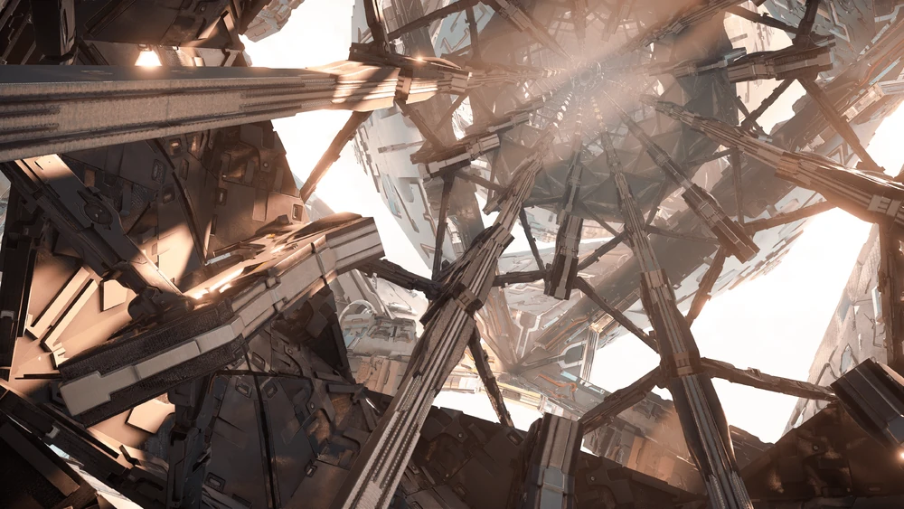
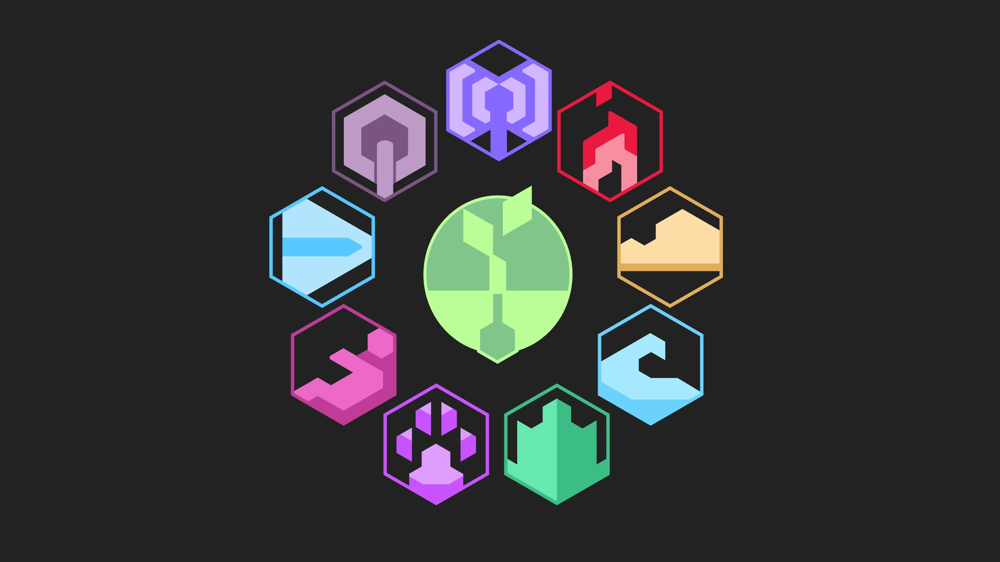
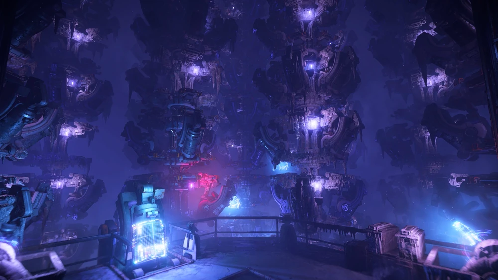

A ultima esperança: Zero Dawn
Diante da extinção inevitável da nossa biosfera, nossa equipe assumiu o compromisso mais audacioso e desesperado da história humana. Nós não estamos construindo uma arma para salvar o presente, mas sim um sistema automatizado de terraformação global para semear o futuro.
Trabalhando contra o relógio no subsolo, nós projetamos a inteligência artificial GAIA e suas funções subordinadas para curar os céus, purificar os oceanos e guiar a vida de volta à Terra quando a tempestade passar.
Este é o nosso legado. O nosso amanhecer.

Nossos objetivos

1. O fim da destruição
Nós projetamos uma rede massiva de transmissão para neutralizar a Praga Faro. Nossa missão imediata é decifrar os códigos de criptografia militar inimiga e enviar um sinal de desligamento global definitivo, garantindo que as máquinas de guerra parem de consumir a nossa biosfera.

2. A reconstrução
Nós desenvolvemos GAIA, uma Inteligência Artificial senciente e empática. Sob o comando dela, criamos subsistemas ecológicos especializados e máquinas automatizadas que trabalharão dia e noite para desintoxicar nossa atmosfera, despoluir os oceanos e reflorestar o solo estéril da Terra.

3. O Renascimento
Nós asseguramos o futuro da raça humana e da fauna através de berçários subterrâneos automatizados. Usando úteros artificiais e um banco de dados global com todo o conhecimento científico da nossa era, nós daremos vida e educação a uma nova geração livre dos erros do passado.
Dra. Elisabet Sobeck, Ph.D.
Embora meu nome encabece esta diretriz como Alpha Prime, o Projeto Zero Dawn é o fruto do sacrifício coletivo das mentes mais brilhantes do nosso tempo. Nós nos reunimos sob a pior das sombras para projetar uma resposta à altura do fim do mundo, unindo ciência de ponta e uma determinação implacável.
De engenheiros de software a geneticistas e especialistas ambientais, nossa equipe dividiu-se em seções críticas para dar vida a cada engrenagem de GAIA. Nós abdicamos de nossos últimos dias na superfície, trocando o céu real pelo brilho dos terminais holográficos, para garantir que nenhuma amostra ou linha de código fosse perdida no processo.
Ao olhar para este registro, saiba que nós não fomos heróis por escolha, mas por absoluta necessidade de dar uma segunda chance à vida. Nós somos os arquitetos do amanhã.